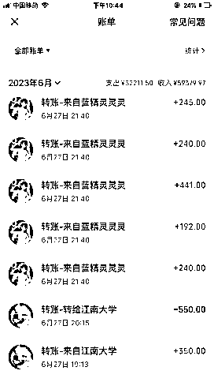

来源：https://uqp3l475ckb.feishu.cn/docx/KU0Edh7pToq6NkxvmrOc550Pnib
我是如何通过家教中介项目在4个月内赚到30万的？
各位朋友好，我是鸣风，姓马，除了主业在经营一家以设计和软件开发为主的信息科技公司以外，也操作这几个副业项目，今天给大家分享的就是大家都比较熟知的家教中介项目，以前的渊源不再提，主要给大家分享的是，从5月份开始，我通过这个项目变现了超过30万，现在给大家微信截图视频证明一下，支付宝收款少一些，就不发了。
最主要，这个项目，我除了两部业务手机和自己的业余时间，没有投入一分钱。
1，家教中介商业模式解析：
主要有几种收费模式：
1，家长，老师双向收费。好处，能挣两头的钱，能够最大程度上控制家长的爽约率。缺点，有些家长的事情比较多，容易特别麻烦。
2，不收家长端的钱，只收学生的信息费。好处是少了很多家长的麻烦事，毕竟免费帮家长找老师，很多事情不必太迁就家长。当然坏处也是有的，就是你会碰到很多素质不高的家长，辛辛苦苦帮他们匹配了老师之后，有被放鸽子的情况，容易被气死。
2，家长端的流量来源。
线上和线下
线上：主要是抖音和视频号。
抖音是最大的流量来源，测试好可以跑通的内容形式，一个月最高可以获得上千留资。当然抖音也在不断的打击家教内容，我们也要随时转变玩法，不断地测试新的内容形式，从而获取最大的流量。可以看一下下图，一个月就有上千个客资，搞得当时根本对接不过来。
视频号也有一些流量，但是不如抖音，后期因为太忙，就只做了抖音，但对视频号感兴趣的同学也可以试试视频号，流量还是不错的，就是转化率低一些。
线下流量：
线下的流量来源主要是各种学校门口发小礼品，和各种母婴平台和私域合作推广，甚至可以地推，形式多样，只要用心，每天也可以获得不少的流量，就是相对于线下要辛苦一些。好处是一旦跑通，就不需要一直和平台的规则做对抗，可以在线下获得稳定的流量来源，积少成多，从而获得广阔的流量。
3，如何招聘老师
第一，就是利用传统的招聘平台。BOSS直聘，智联招聘，前程无忧甚至58同城等等。这里最推荐BOSS直聘，关于招聘的部分就不展开了，不会用这几个平台的网上自己百度一下就会了。
第二，利用学校内的资源，可以去学校内部，比如大学生活动中心去做活动，500块钱一天摆个摊，也能吸引很多想做家教的同学来加你。
第三，招聘代理，如果你的单子足够多，但是没有那么多老师消化的话，这个时候就可以考虑招聘代理，主要是学校内部的大学生，他们组织一个学校内部的家教兼职群还是比较容易的，毕竟有现成的资源在。
第四，还可以考虑加一部分同行，有出不去的单子，或者很难出的单子，可以考虑直接扔给同行，到时候你们分账就可以了。
4，关于家教的收费规则
这里有退费和不退费两种：
一种是如果单子不成或者出现各种问题，给学生退费。
一种是不退费，只收钱，但是可以允许学生调单子。
市场上这两种都存在，你可以选择适合你的操作。下图是6月27号当天天一个城市的收款量。

5，做家教一定要注意的心态问题
因为你是纯线上撮合交易，这里面必然会出现很多的爽约情况。大部分是家长爽约，小部分是老师爽约，这里你就非常需要放平心态，很多新手，在最初的时候容易心态爆炸，但是过了1-2个月就没感觉了，所以前期一定要调整心态。
6，单城市和城市矩阵
我这里晒的都是一个城市的交易记录。如果你的流量来源都是在线上，那么你就可以考虑做城市矩阵，成立工作室，做城市群，这样你的收入会几倍甚至更多的增长。所以我推荐大家做城市群，这就要大家不断的迭代新的流量和短视频玩法，从而获得更好的线上流量。
我是鸣风 ，第一次在平台上冒泡，感谢大家。